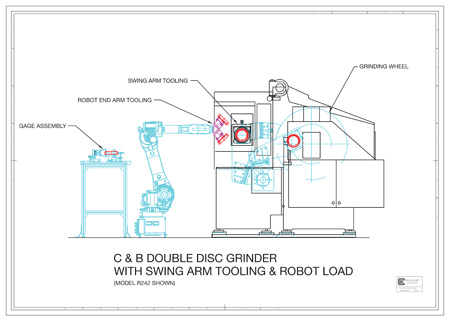
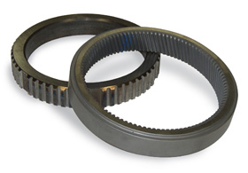
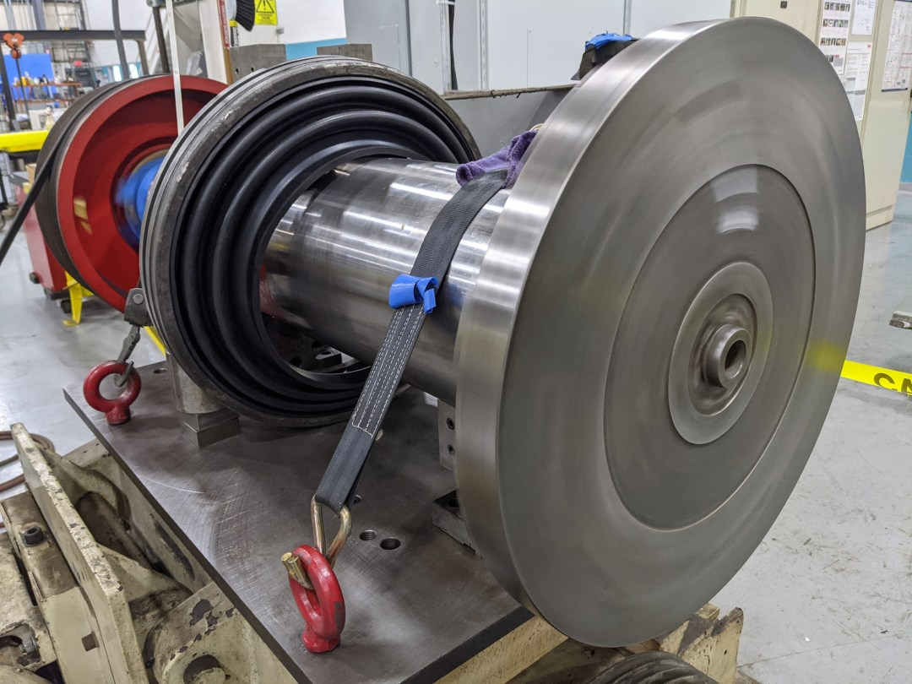

C&B MACHINERY · DESIGN REVIEW · 29 OCT 2026
从真实内容出发，
重新组织全站。
新导航已同步到全站。设备、应用、服务、库存、公司与新闻内容均按原站资料展开；以下入口方便对照检查。
先看这四个页面
全站本地 Demo。可从原站内容一路进入询价、My projects 与报价。
01 / GLOBAL NAVIGATION
全站首页与新导航
统一 default、current、hover、open 和 focus；强调 My projects，压低顶部高度。
进入完整 Demo 02 / MACHINE & PROCESS
Swing Arm 设备／工艺页
11 项原站规格、真实图解和设备视频。用工程信息组织页面。
查看设备代表页 03 / APPLICATION LIBRARY
Powertrain 案例库
13 个独立案例，可按零件、材料和机型检索，保留案例条件与参数。
查看案例代表页 04 / SERVICE PROCESS
Spindle Rebuild 服务页
7 个维修步骤与完整原站图库，说明设备交给 C&B 后会发生什么。
查看服务代表页CONTENT MIGRATION
原站内容迁移清单
正在读取来源清单…
清单读取失败。请刷新页面，或下载上方 JSON 查看。
| 原站页面／分组 | 状态与去向 | 必须保留的内容 | 待确认／缺口 |
|---|
没有符合条件的页面。试试其他标题或分组。
范围边界与上线准备
这是一份内容迁移清单，不代表所有原站内容已完成重建。新闻归档、法律与商务确认等范围单独记录。
这轮 review 的重点
- 导航是否足够紧凑，My projects 是否清楚，状态之间是否稳定。
- 设备、应用、服务、库存和新闻是否保留了真实信息，并且容易找到。
- 手机能否找到信息、打开菜单、返回项目并开始询价。
导航、来源内容与素材已扩展到全站。原站不明确的数据及库存可用性在清单中单独记录。